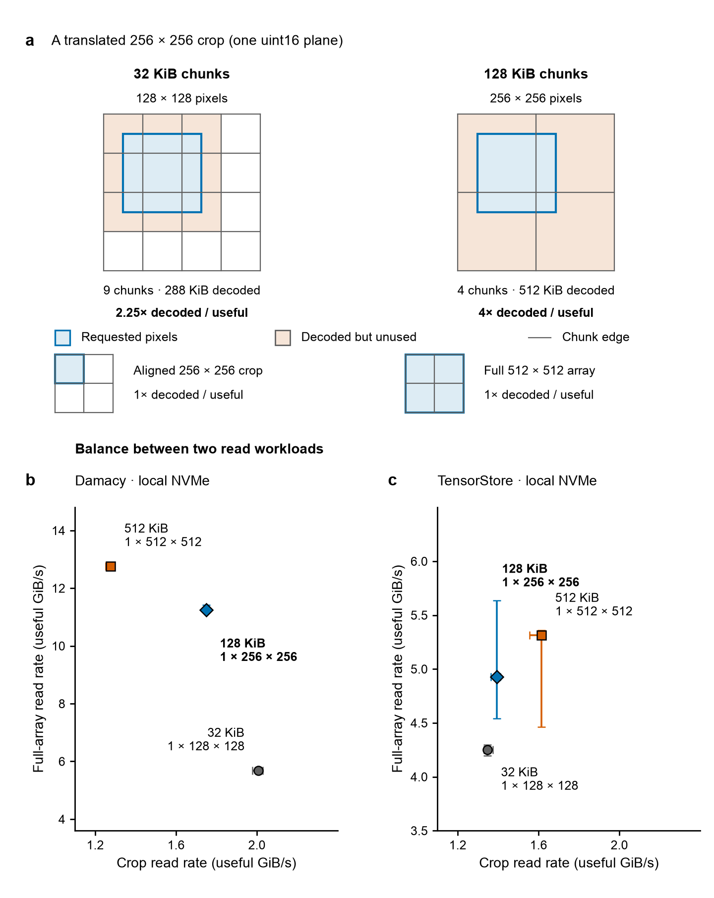
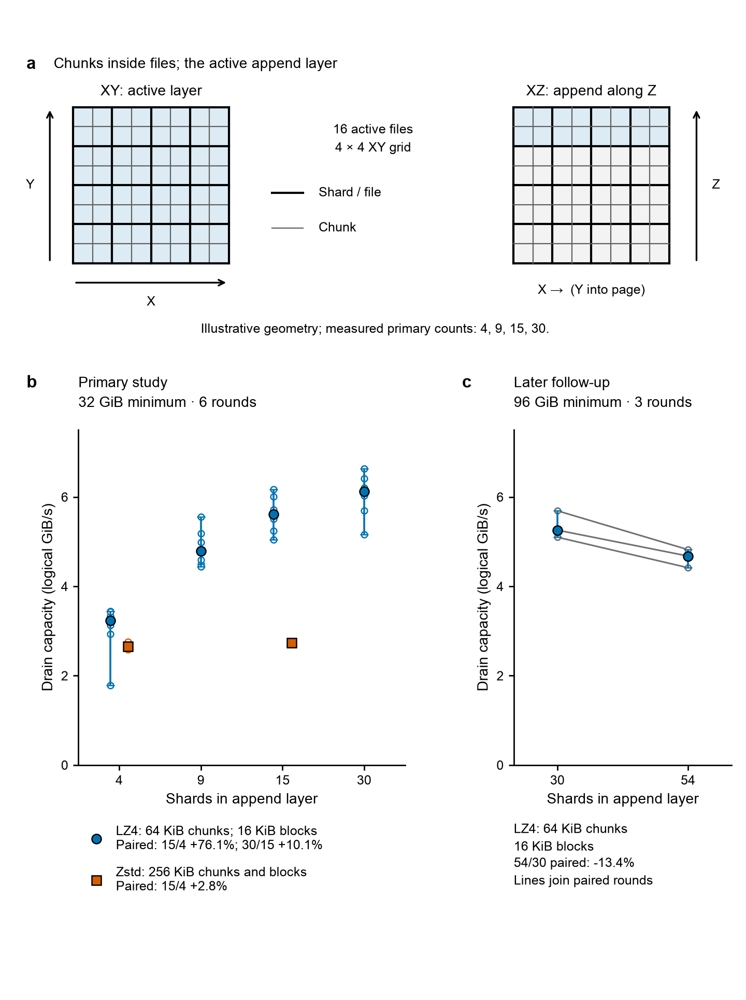
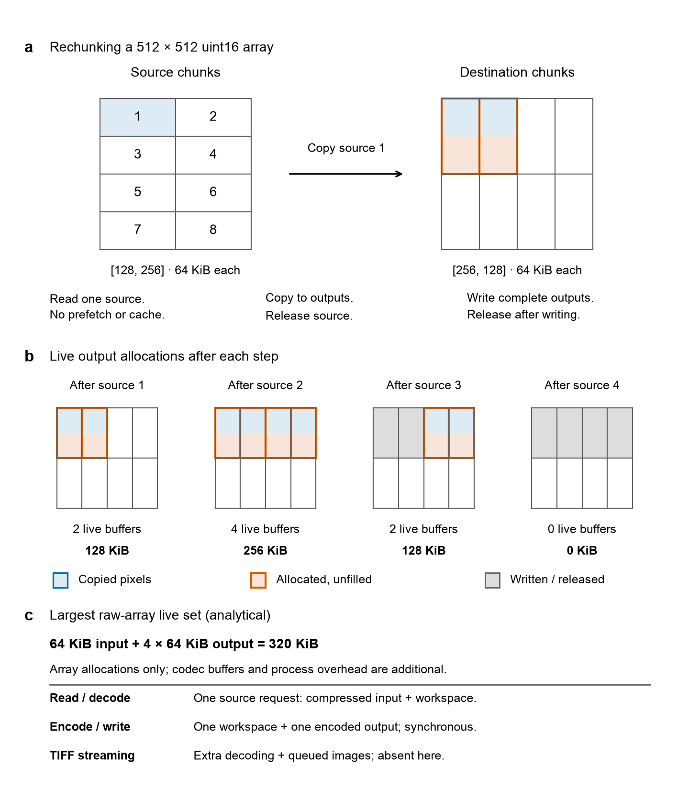

Writing readable Zarrs
Nathan Clack, 2026 September
Microscopy data need to support visualization, model training, and processing
with arrays. A viewer or training pipeline often needs a small region at an
arbitrary position; an analysis may need every value. The way we arrange data
on disk can make one of these tasks fast and the other slow. Usually we want to
keep one stored representation that serves both, while remaining practical to
write during acquisition or conversion.
Zarr divides an array into chunks: rectangular blocks stored and usually
compressed together. Decoding reconstructs their array values during a read.
We can describe the main reads as random, unaligned crops, small regions
whose positions are not constrained to the chunk grid, and full-array scans,
which collectively read every value. Choosing chunk dimensions means balancing
these two patterns.
The approach used here is to measure analyze Pareto frontiers across
workloads. A frontier retains tested choices for which no alternative is at
least as good on every objective. For example, when the objectives are read
throughput and compression, improving one may require sacrificing the other.
We compare these tradeoffs, favor cropped reads for visualization and training,
then check whether the resulting layout can be written fast enough and converted
within a memory budget.
The measurements below support a starting compromise of 128 KiB of
uncompressed values per chunk (1 KiB = 1,024 bytes). This preserves much of
the small-chunk crop performance while improving full scans in the main example.
The appropriate choice still depends on the reader and the requests it serves.
Read workloads
Consider a typical vision transformer accepting 224 × 224-pixel images as samples.
It divides each input into 16 × 16 patches and represents each patch as a
token, one unit of model input. The resulting 14 × 14 token grid describes
the model's context window. A reader must retrieve the whole crop, potentially
from any position in the image. The sample size might change across model
architectures, so we need to pick a chunk size that generally works well.
Random crops approximate these training requests and some visualization reads.
Full-array scans represent processing that needs every value. For either
workload, I specify the selection's size along every axis and its starting
positions. A batch is a group requested together; concurrency is the
number of requests in progress at once. A cache retains previously loaded
data in memory, so repeated requests may do less storage work. These details can
change performance even when crop dimensions stay the same.
Here, the measured crops are 256 × 256 pixels in one image plane. Crop
positions vary without being constrained to chunk boundaries. For comparison,
chunk-aligned crops cover whole chunks: these reads have no boundary waste,
and are suitable for analyzing full-array scans.
Chunk size
Reading part of a compressed chunk generally requires decoding the whole
chunk. We use uint16 pixels—unsigned 16-bit integers occupying two bytes each.
Shapes are written as [Z,Y,X]: numbers of planes, rows and columns. Thus
[1,128,128] occupies 32 KiB before compression, while [1,256,256] occupies
128 KiB.
A translated 256 × 256 crop, meaning the same-sized selection moved to another
position, can intersect nine 128 × 128 chunks or four 256 × 256 chunks (Figure
1a). These cases require decoding 2.25 or 4 times the requested pixels.
Decode amplification is decoded chunk bytes divided by useful requested
bytes.
Transferred bytes can differ from decoded bytes because data are compressed,
storage requests may be combined, and caches allow reuse. Smaller chunks
reduce boundary waste but create more chunks to locate, schedule and decode. We
therefore measure throughput, useful data delivered per second, rather than
predicting speed from geometry alone.
The Zarr readers Damacy and TensorStore were tested on a local
solid-state drive using NVMe, a storage interface designed for these drives.
Damacy is a reader I developed, optimized for loading data for model training.
Tensorstore is a performant library that can read and write zarr. Here, they
decode synthetic image data on the computer's main processor and return float32
values. I report useful uint16 input bytes per second; rates counting the larger
output values would be twice as high.
A codec converts values into their stored representation (encoding)
and reconstructs them (decoding). These tests use Blosc with the Zstandard
compressor, abbreviated Zstd. Blosc can divide a chunk into smaller compression
blocks, a separate choice from storage chunk dimensions. Figure 1b–c
holds that block setting at 16 KiB Read data and definitions.
The broader read frontiers compare throughput with stored
size or read traffic within each workload. Figure 1 instead isolates three chunk
sizes and compares crop with scan throughput, keeping the reader and compression
settings fixed. We assess that tradeoff separately for each reader, using
medians—the middle values of three repeated measurements—and retain the observed
ranges.
For Damacy, moving from 32 to 128 KiB retains 87% of crop throughput while
nearly doubling scan throughput. Crop medians are 2.007 and 1.749 GiB/s; scan
medians are 5.690 and 11.246 GiB/s. Moving to 512 KiB ([1,512,512]) costs
another 27% of crop speed for a 14% scan gain. These three candidates form a
crop–scan tradeoff: none improves both rates over another.
TensorStore behaves differently. Its 128 KiB candidate improves crop and scan
rates over 32 KiB by about 4% and 16%, and 512 KiB improves both again. On
these observed median rates, 512 KiB dominates the smaller candidates: it is
faster on both workloads. The 128 KiB choice is therefore not on this reader's
crop–scan frontier. It is a practical starting balance for the uses and readers
discussed here; a TensorStore-only deployment can reasonably favor larger
chunks. Selected comparison.
Chunk shape remains as important as bytes. Spreading a chunk across several
planes changes the cost of a single-plane crop. The hypothetical 224-square
uint16 input contains 98 KiB of useful pixels, but its position still determines
which chunks must be decoded. Choose using time spent on representative
requests: averaging two workload throughputs does not give the elapsed time for
their mixture.

Figure 1. Chunk geometry and read performance. a, A 256 × 256 crop starting at row 64, column 64 intersects 128 × 128 or 256 × 256 chunks, corresponding to 32 or 128 KiB for one uint16 plane. Requested and unused decoded pixels are distinguished; aligned and full-array controls illustrate different coverage. The hypothetical model uses 224 × 224 inputs and 16 × 16 token patches; these do not specify storage chunks. b–c, The balance between two read workloads, measured separately with Damacy and TensorStore. Each point represents one chunk layout: its horizontal position shows the median rate for random, unaligned crop reads, and its vertical position shows the median rate for full-array reads. Moving right means faster crops; moving up means faster full-array reads. Bars show observed minimum–maximum ranges from three repetitions per layout and workload. Full-array read axes differ between panels. Reads use synthetic smooth4 data on local NVMe, with decoding on the main processor. Chunk-location lookup information is already loaded, but data-file contents are absent from the operating system's memory cache before each pass; reuse within a pass is allowed. Blosc-Zstd uses a fixed 16 KiB block setting. Damacy uses readahead-disabled chunks256-random mode. Rates count useful uint16 bytes over time spent planning, reading, decoding, converting values and assembling output. Source: read summaries, cpu-chunk-blocks phase.
Shards
Small chunks need not mean millions of small files. A shard groups encoded chunks with an index, a table locating each chunk's bytes. On the filesystems discussed here, each shard is a file. A range read fetches a specified interval of file bytes, allowing selected chunks to be read without loading the whole shard.
Chunk shape controls the unit of decoding; shard shape controls file grouping (Figure 2a). Spreading work evenly across files gives the filesystem opportunities to operate in parallel. Touching sixteen files does not prove sixteen reads overlap: scheduling and the distribution of requests also matter.
The local read array has sixteen shards of approximately 1 GiB raw capacity, the number of values times their bytes per value, before compression. Recent write tests also keep shard capacity near 1 GiB. This is a test setting, not an established optimum.
I use local NVMe reads because they better represent the intended deployment. I have less confidence in the collected reads over NFS, a network filesystem protocol. The extensively tested NFS writing results come from Chucky, a next-generation backend—the component that performs the writes—for acquire-zarr, a library for writing incoming images as Zarr. The NFS mount's nconnect=16 setting requests sixteen network connections. Different data and machines make these separate read and write studies.
Write workloads
There are two writing workloads to consider. Streaming accepts images arriving during acquisition or decoded from TIFF image files. Here, rechunking covers Zarr-to-Zarr conversion, including changing the chunk layout or migrating from format version 2 to version 3. A version migration need not change chunk shape.
| Write workload |
Source |
Main constraint here |
| Acquisition streaming |
Images arriving from an instrument |
Writer processing rate and temporary storage in memory |
| TIFF streaming |
Images decoded from files |
Complete conversion memory use |
| Rechunking |
An existing Zarr |
Source/destination overlap and memory use |
Acquisition imposes an arrival order and rate. A conversion can often revisit its source and choose its processing order, or traversal, to suit both layouts. Throughput matters in all three settings, but the freedom to control that order changes the memory problem. Random subvolume updates are outside this discussion.
Acquisition
Chucky's microscopy tests repeatedly write a preloaded sequence of images. Logical input bytes count their original pixels before compression, excluding padding, extra values added to fill chunk boundaries. After the last image is submitted, final drain completes the pending work and closes the files. Drain capacity is logical input divided by the time spent submitting images plus final drain. Counting submission time alone would hide unfinished work.
These rates exclude loading and decoding TIFFs but include compression on a graphics processor (GPU) and filesystem output. Acquisition needs headroom, spare writer capacity above its incoming rate, and buffers, allocated memory holding data awaiting processing. Buffers absorb temporary slowdowns, not an indefinite overload. No universal headroom percentage is established, and closing files does not prove the data would survive a crash.
For streaming, concurrent shards are the shard files in the active layer perpendicular to the direction in which data are appended. They are typically opened, written and closed over the same interval. Append a Z/Y/X array along Z with a 4 × 4 shard grid across Y/X, for example, and the layer contains sixteen shards. This is the illustrative geometry in Figure 2a; the primary measured counts are four, nine, fifteen and thirty.
The shard-count tests replay BBBC022 microscopy images with GPU compression. This public collection of cultured human cells comes from the Broad Bioimage Benchmark Collection; Figure 3a shows one of the sixteen fields used here. One series uses LZ4, another lossless compressor. Rates are paired within each test round: divide one configuration's rate by the other's before summarizing the changes across rounds. Moving from four to fifteen actual shards improves LZ4 drain capacity by a median paired 76.1%. Moving from fifteen to thirty adds a median 10.1%, but individual paired changes range from −14.1% to +22.4%. The Zstd control gains only 2.8% from four to fifteen; its chunk and block settings differ, so the useful comparison is within each series. Paired primary results.
A later comparison finds all three 54-shard samples slower than their paired 30-shard samples, by a median 13.4%. That follow-up used a separate job and a 96 GiB minimum input, versus 32 GiB in the primary series, so Figure 2c keeps it separate. Reference measurements, repeated runs of a fixed configuration, show substantial changes in performance during the tests. More files can help, but these results establish neither a stable ceiling nor an optimum dictated by nconnect=16. A layer count is not a worker count, connection assignment or measurement of overlapping reads and writes. Follow-up.

Figure 2. File parallelism for streaming. a, Chunk and shard boundaries in an illustrative Z/Y/X array appended along Z; the highlighted 4 × 4 layer contains sixteen shard files. The diagram describes geometry, not observed simultaneous reads and writes. b, Chucky GPU microscopy replay to shared NFS with nconnect=16, using BBBC022 inputs and approximately 1 GiB raw shard capacities. LZ4 uses 64 KiB [4,64,128] chunks and a 16 KiB block setting; Zstd uses 256 KiB [4,128,256] chunks and a 256 KiB block setting. Primary points have six repetitions, a 32 GiB logical minimum and timing through final drain/close. Rates count unpadded logical input bytes; bars show observed ranges around medians. Shard counts form labelled groups; codec symbols are separated within shared groups for visibility. Paired gains are computed within rounds. Before/after references have a median ratio of 0.975 and an observed range of 0.515–1.292; this drift is not divided out. Figure S1 shows all reference pairs. c, The later LZ4 30/54 comparison, selected after reviewing the primary results, uses a separate job, a 96 GiB minimum and three paired repetitions. It is not an extension of the primary curve. Sources: primary summaries, paired results and follow-up.
For writing, the Pareto objectives are speed and final stored size. My selection rule allows some extra space: choose the highest throughput within 10% of the smallest comparable output. For size S and throughput T, that means maximizing T subject to S ≤ 1.10 × min(S).
Figure 3 expresses stored size as compression fold: logical input bytes divided by stored bytes. A value of 2× means the stored output is half the input size. The 10% size allowance requires a compression fold at least as large as the best tested fold divided by 1.10, calculated within each comparable group.
The earlier BBBC022 comparisons in Figure 3b–c show why that allowance matters. They use a write-byte proxy, bytes submitted to shard writes as an approximation of stored size, normalized by logical input. Ten of fourteen CPU settings and ten of thirteen GPU settings fall below their group's compression threshold. The fastest GPU setting, Blosc-LZ4 with 16 KiB chunks and blocks, reaches 6.33 GiB/s but only 1.438× compression, below the 1.754× cutoff. The fastest qualifying setting, Blosc-Zstd with 256 KiB chunks and 64 KiB blocks, reaches 4.21 GiB/s at 1.886×. Codec, chunk shape and block request vary together in these comparisons; they did not test 128 KiB. The CPU and GPU studies use different machines and resource budgets. Measurements and observed ranges.
Across the broader microscopy archive, some inputs favor small chunks and others favor larger ones. The newer BBBC022 comparison in Figure 3d–e measures final file lengths directly and holds the writer configuration fixed while varying chunk shape. It provides the focused check on the read-derived choice. Historical write findings.
The six layouts all finish within 2% of the smallest file size, so every one meets this comparison's 1.715× compression threshold (Figure 3d–e). At 128 KiB, using the same [1,256,256] chunk shape as the read candidate, final size is only 0.81% above the 32 KiB minimum. Its median drain capacity is 2.267 GiB/s, with an observed range of 2.196–2.735. The 64 KiB layout has the highest median, 2.639 GiB/s, with a range of 2.286–2.725. Those overlapping ranges do not establish either a stable ordering or equivalent performance. Write summaries.
The writing evidence leaves room for the read-derived 128 KiB choice. Its size is near the minimum; sufficient drain capacity depends on acquisition rate and buffering. Final size includes indexes and metadata, the information describing the array. An accounting audit reconciles submitted writes with final file lengths to a correction below 0.0012%.
![A BBBC022 microscopy field with a 100 micrometre scale bar appears above separate CPU and GPU comparison plots. Ten settings in each comparison fall below its dashed compression threshold, including faster LZ4 choices. Colors and shapes identify compressors throughout. Filled symbols select the highest median rates within the allowance. Below, all six fixed-block Blosc-Zstd layouts use blue squares, with only 64 KiB filled, and exceed their final-size compression threshold; separate rows show their rate medians and ranges.](figures/figure-3.png)
Figure 3. Microscopy input and writing capacity. In b–e, colors and shapes identify compressors consistently; filled symbols mark the highest median within each comparison's 10% size allowance. a, One complete BBBC022v1 field: human U2OS cells, MitoTracker Deep Red channel w5, plate 20585, well A14, site 1. Scale bar, 100 µm, using the recorded 0.656 µm/pixel calibration. Grayscale maps the field's 1st–99.5th intensity percentiles (246–1018.405) linearly to black–white, clipping for display only; benchmark pixels are unchanged. Image: Gustafsdottir and colleagues, Broad Bioimage Benchmark Collection, CC0. b–c, Complete retained BBBC022 CPU and GPU NFS comparisons: fourteen and thirteen configurations, respectively, each measured three times. Points are median drain capacities; observed ranges and all configurations are in the source table. Compression fold uses total logical input divided by total measured shard-write bytes across repetitions, a proxy for final size. Dashed lines mark each study's best fold / 1.10: 1.718× for CPU and 1.754× for GPU. Ten settings in each study fall below the threshold. Labels give chunk/block requests; compressor symbols are defined in the shared legend. CPU and GPU use different machines and resource budgets, with fifteen shards per append layer. d–e, A separate GPU comparison measures final stored bytes for six chunk sizes, 16–512 KiB, with fixed Blosc-Zstd, bitshuffle (rearranging corresponding bits before compression), 16 KiB blocks and four approximately 1 GiB raw shards per layer. All points are blue squares for Blosc-Zstd; only the 64 KiB symbols are filled. Direct labels identify 64 KiB and the proposed 128 KiB compromise in d. Panel d shows medians and the 1.715× threshold; panel e shows each median and observed minimum–maximum over three runs, with compression fold below each chunk label. All six sizes are within 2% of the minimum. Each fixed-volume run processes 22.08984375 GiB of logical input. All compression axes are logarithmic (base 2); equal distances represent equal ratios, and values right of the dashed lines qualify. Rates count unpadded logical input over append plus final drain/close time; input loading and preparatory writing are excluded. Final sizes in d–e include metadata and shard indexes. The studies remain separate from each other and from Figure 1's synthetic local reads. Sources: comparison summaries, fixed-layout summaries and size accounting.
Conversion memory
For a TIFF conversion, writer memory is only part of the process. Decoded images may wait in a queue while the writer retains unfinished chunks, indexes and pending output. A codec also needs a workspace, temporary memory for compression or decompression. Count buffers that coexist, and shared buffers only once. Budget the computer's main memory and GPU memory separately, including memory reserved for transfers between them.
Rechunking adds a geometric problem: source and destination chunks may overlap without matching. Processing order determines how long decoded source data and incomplete destinations must remain live. A source-oriented traversal can avoid source rereads while retaining several partial destinations. Completing one destination at a time can reduce that retention, at the cost of rereading or caching source chunks shared with later outputs.
Figure 4 works through a small example. A 512 × 512 uint16 array changes from [128,256] source chunks to [256,128] destination chunks. Each chunk is 64 KiB. Read source chunks one at a time, left to right and then top to bottom. Do not read ahead or cache earlier source chunks. Allocate a full destination buffer on first touch and copy into it. Finish encoding and writing completed outputs, then release their buffers before reading the next source.
After the first two source chunks, four destinations are half-filled: 256 KiB of retained output. Decoding the next 64 KiB source while those buffers remain live gives a 320 KiB raw-array allocation bound. Completing outputs reduces the retained set; after four source chunks it is empty. The pattern repeats for the lower half of the array.
That 320 KiB is an analytical result for this schedule, not a measured process peak. It excludes encoded input, encoded output, codec workspaces, metadata and runtime allocations. It assumes one codec/write operation at a time, completed before the next begins. Overlapping these stages keeps additional buffers allocated; a different processing order can also change the bound.

Figure 4. Conversion memory follows buffer lifetimes. Analytical example for one 512 × 512 uint16 array, rechunked from [128,256] to [256,128]; both chunk shapes contain 64 KiB. Eight source chunks are processed left to right, then top to bottom, one at a time, without reading ahead or retaining a source cache. Destination chunks receive full allocations on first touch. Completed outputs finish encoding and writing and are released before the next source. After steps 1–4, incomplete output counts are 2, 4, 2 and 0; steps 5–8 repeat. The largest set of raw-array buffers allocated at once is one 64 KiB source plus four 64 KiB destinations, totaling 320 KiB. One codec/write operation runs at a time, no write remains pending between steps, and at most one encoded output is retained. The bound excludes codec workspaces, encoded input/output bytes, indexes, metadata, runtime allocations and caches. It is not a measured peak for the complete conversion process. TIFF decoder buffers apply to TIFF streaming, not to this Zarr-to-Zarr example; no whole output shard is assumed resident.
The same accounting scales to a real conversion: choose the regions processed together and their order, bound queues and caches, then sum the buffers that can coexist. Keep main-memory and GPU-memory estimates separate. Temporary storage can move work out of memory, but introduces more reading and writing; processing smaller regions at each step may likewise increase source rereads. A lower memory setting therefore needs an explicit account of where that work goes.
Sharding does not by itself require a whole output shard in memory. That depends on the writer's delivery strategy. The available conversion records do not supply measured process peaks, so this buffer analysis should remain separate from measurements of complete conversion memory or throughput. Conversion evidence and limits.
Layout recommendations
Start with actual crops and scans. Try 128 KiB [1,256,256] uint16 chunks as a balance; move toward 32 KiB when Damacy crops dominate, and include larger candidates for TensorStore or greater scan emphasis. Check the application's requested planes, image channels and positions.
Distribute balanced work across shard files. The tested LZ4 writer benefits from exploring roughly fifteen to thirty concurrent shards; the tested Zstd setup gains little from four to fifteen. Keep actual counts and raw capacities in the configuration.
Then check how data arrive. Acquisition requires capacity above the incoming rate and room for variable service. Conversions require a memory budget based on the buffers their processing order keeps allocated.
Methods
Local read comparison. Figure 1 selects phase=cpu-chunk-blocks, storage_type=local block storage, codec=zstd, block_bytes=16384, Damacy implementation=chunks256-random or TensorStore, and workloads random-1x256x256 and full-scan from read-summary.csv. Each point/workload has three repetitions. The generated test pattern, named smooth4, has array shape [512,4096,4096] uint16, partitioned into sixteen [512,1024,1024] shards. Each crop pass requests 16,384 selections in batches of 128: the sampler cycles through shard start regions, draws valid XY origins within each region and random Z, and permits overlap and shard crossings. It is not a globally uniform sampler. Matched encodings and readers reuse the saved query list. Full scans tile with [8,256,256] selections and cover all logical values.
The reading computer uses an AMD EPYC 9655P processor; the job allocates 48 physical cores and 64 GiB of main memory. Both readers use 32 workers for decoding/copying and sixteen for file reads, producing float32 output in one continuous region of main memory. Damacy keeps file handles open between requests, disables readahead and uses two 256-chunk input buffers. Indexes are already in memory. Before each pass, checks confirm that the operating system's cache contains none of the input files' data pages, the fixed-size units it manages. Reuse during the pass is allowed; the dataset fits in memory. Active timing includes planning, reads, decoding, data-type conversion and assembly, excluding preparation, correctness checks and cache checks. Rates use useful_active_gib_s_*, not output-byte rates. Damacy's recorded base revision is 8d0931e7d131fd5d4c565458736ab586012c78c1, with benchmark changes and native/source hashes retained in read metadata; TensorStore is 0.1.85. Detailed read methods.
Microscopy writes. Chucky replays sixteen 520 × 696 uint16 mock-control fields from BBBC022v1, obtained from the plate 20585, channel w5 image archive, using site 1. The dataset is described by Gustafsdottir et al. (2013) and distributed through the Broad Bioimage Benchmark Collection (Ljosa et al., 2012). The fixed-volume comparison repeats the ordered source for 32,768 frames, totaling 22.08984375 GiB of logical input. The append axis is replay, not additional spatial content. Shard shape is [2048,512,512], with four files per layer. Blosc-Zstd uses requested compression level 3, bitshuffle and a 16 KiB block setting. Spatial padding varies by chunk shape; useful input, submitted padded bytes, metered output and final file lengths remain distinct. Three runs per layout use append-through-final-close timing, excluding initialization, input loading and preparatory runs whose output is discarded. Source images carry the CC0 public-domain dedication; selection, original authorship and TIFF hashes are in input provenance.
Historical write comparisons. Figure 3b–c includes every current-report, frontier-eligible BBBC022 filesystem configuration in the archived summaries: CPU study reef-turin-microscopy-pareto-core-3710982 and GPU study reef-l40-final-confirmation-3704091. These use the same source-image hash as panel a, fifteen actual append-layer shards, four replay planes per chunk, approximately 1 GiB raw shard capacities and NFS with nconnect=16. The CPU study allocates forty CPUs and uses 32 writer workers; the NVIDIA L40 GPU study allocates eight CPUs and uses four writer workers. Both use 32 I/O workers, four output buffers and the coverage-qualified append-through-close timing policy. Measured logical input is at least 32 GiB per run; replay volumes can differ. Compression fold is the ratio of summed logical bytes to summed shard-write bytes, including padding and measured index writes but excluding separately published metadata. Final file lengths were not measured. Thresholds are computed within each original comparison group using exact integer byte ratios. All 81 sample runs and their observed rate ranges are retained; no references, failed runs or superseded studies are pooled into these panels. Contributing runs and measurement definitions.
The shared-layout chunk shapes are [replay,Y,X]; replay indexes repeated input frames. All values are uint16.
| Raw chunk (KiB) |
Chunk shape |
| 16 |
[1,64,128] |
| 32 |
[1,128,128] |
| 64 |
[1,128,256] |
| 128 |
[1,256,256] |
| 256 |
[1,256,512] |
| 512 |
[1,512,512] |
The primary shard series uses six rounds, a 32 GiB logical minimum, two seconds of requested preparatory writing, three seconds of requested image submission, at least two transitions from one append layer of shard files to the next and timing through final close. Rate ratios are paired within rounds; references are reported separately. The later 30/54 follow-up uses three rounds and a 96 GiB minimum in a separate job. It was selected after reviewing the primary results. The primary shard series was restarted after increasing the benchmark metering wrapper's capacity; interrupted earlier shard observations are supplementary. Shared-layout runs remain from their original completed job. Chucky's recorded base revision is e3cd3af6c669c99d2b15bbebf9e95a6132319f09; phase identities preserve the distinct patched binaries and jobs. See findings, follow-up protocol and size accounting.
All plotted intervals show the observed minimum and maximum rates. They are not confidence intervals, which would estimate uncertainty about an underlying population quantity. Read and write studies use different inputs, hardware and shard geometry. Their data are not pooled. The conversion diagram is an explicitly bounded analytical example, not a measured memory result.
Draft and figure preparation. AI assistance used the Doc Coauthoring workflow and Scientific Visualization skill. The latter is described by Kassis, T., Agarwal, V., He, Y., Patel, D., and Brueckner, A. M. (2026), Scientific Agent Skills: A Library of Procedural Knowledge for Research Agents. Figure sources retain the data, transformations and software versions; the Nature research figure guide, checked 25 September 2026, supplies the style baseline. These reading exports use larger type and thicker lines for the article's display width.